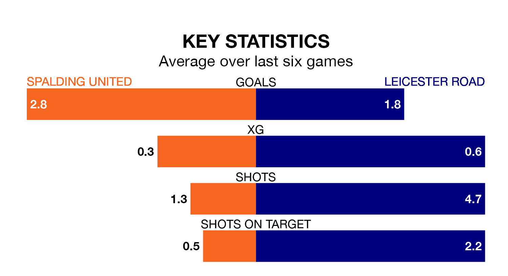

Two of the Northern Premier League Division One Midlands's top sides face each other at Sir Halley Stewart Field in Monday's kick-off, when second-placed Spalding United host fourth-placed Leicester Road.
Spalding have picked up 22 wins and five draws from 32 games so far this season, and sit 11 points above the visitors going into the 3pm match.
Leicester Road, meanwhile, have won 17 and drawn nine, picking up 60 points.
With 73 goals in 32 games so far this season, Spalding are the league's highest scorers with 2.3 goals per game. And they are conceding fewer than average, letting in 31 goals at a rate of 1.0 per game.
Leicester Road are also above average scorers, with 1.7 goals per game, compared to a league average of 1.6. They have conceded 1.2 goals per game.
United are in good form in the Northern Premier League Division One Midlands, with four wins and a draw from their last six games.
With three wins and two draws over that period, the visitors' form is slightly worse – they have taken 11 points from 18, compared to the home team's 13.
In the last three years, Spalding and Leicester Road have played each other on three occasions. They won one each, and they drew once.
Their last meeting was on December 26, when Spalding won 1-0 away.
Spalding's last match was on Saturday, a 3-0 win against Shepshed Dynamo.
Leicester Road drew 2-2 with Sporting Khalsa last time out, also on Saturday.
Updated: 10:31 (UTC), 31/03/24